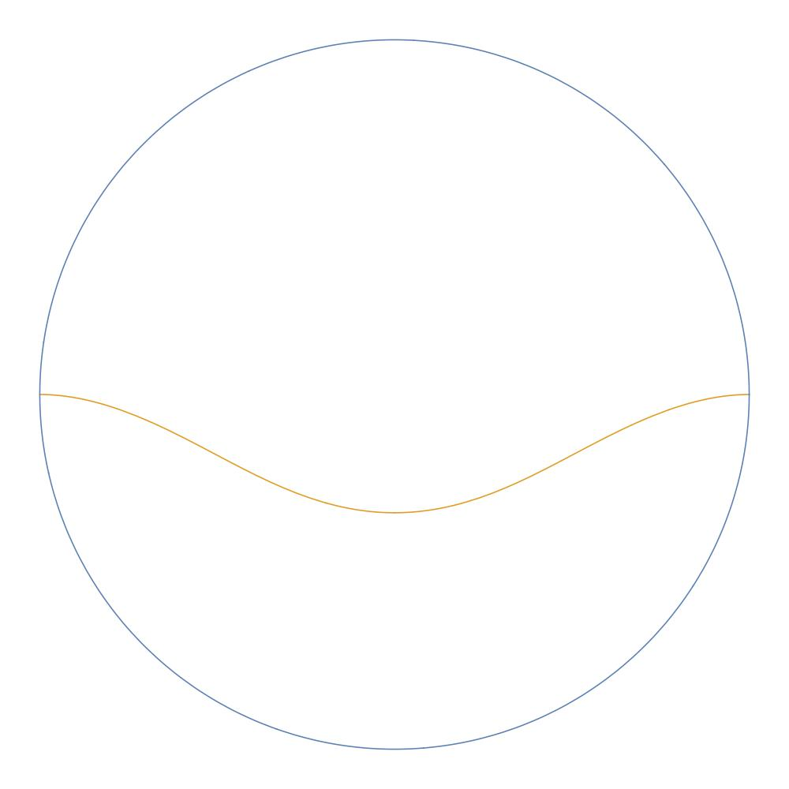

Keaton Quinn



I am a pure math doctoral candidate at the University of Illinois at Chicago. Previously I was at Michigan State University where I completed the Advanced Track Math degree. I'm a student of David Dumas studying surfaces in quasi-Fuchsian manifolds. My research interests lie in Differential Geometry and Geometric Analysis.
My CV can be found here.
Papers
- Asymptotically Poincaré surfaces in quasi-Fuchsian manifolds. Proceedings of the American Mathematical Society, 148 (2020), 1239-1253. doi.org/10.1090/proc/14850
Notes
This serves as a place to collect the notes I've made on random topics thoughout my time in graduate school.
- The Second Derivative Test on Riemannian manifolds
- The Schwarzian derivative
- Complex analysis and Riemann surfaces
- Isometries of real normed vector spaces
- Bilinear forms and the adjoint of a linear map
Teaching
Fall 2019 - ESP Calculus 3
Tuesday or Thursday
2:00 - 3:50 pm in 320 Taft Hall
Office Hours: 10:00 am - 11:00 am Tuesday and Thursday in the MSLC on the 3rd floor of SES.
Office Hours: 10:00 am - 11:00 am Tuesday and Thursday in the MSLC on the 3rd floor of SES.
Tuesday Syllabus , Thursday Syllabus
- Week 1: Calc Review
- Week 2: Vectors
- Week 3: Vectors and Planes
- Week 4: Curves
- Week 5: Arc Length and Level Curves
- Week 6: Review
- Week 7: Partial Derivatives and Tangent Planes
- Week 8: Extrema and Optimization
- Week 9: Double Integrals
- Week 10: Review
- Week 11: Spherical Integration
- Week 12: Vector Fields
- Week 13: Line Integrals and Green's Theorem
- Week 14: Thanksgiving
- Week 15: Stokes' and Divergence Theorem
- Formula Sheet